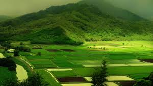

Image 1
Image 2
Image 3

Image 4
Ecotourism is more than people visiting a new place, it has to do with the environment and the activities in which a person involved that may harm the environment. There are some objectives that were implanted with ecotourism: First of all, the most important aim that emerged from the implementation of ecotourism is that travellers need to be more aware of the environment and damage, their actions as travellers and members of the society on earth. The main objectives are to minimize the potential environmental impact on natural and cultural environments of sites visited. Generate awareness about the nature and care. Tourism experiences that are favourable for visitors and locals.